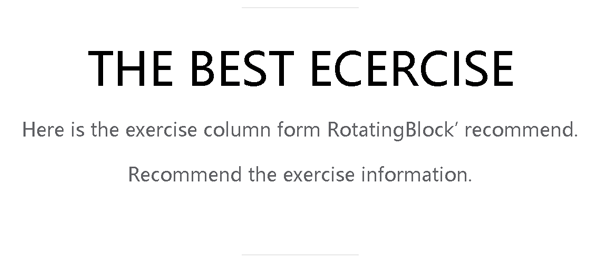
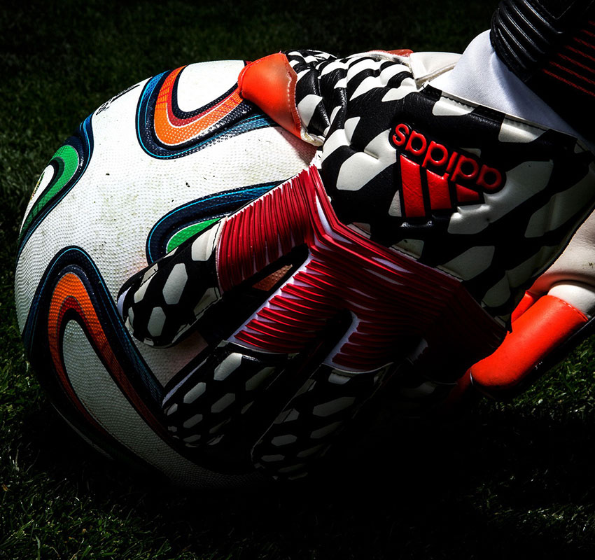

-
录取加成 在生源省级招生考试机构划定的本科第二批次录取控制分数线上录取体育测试合格考生。对于体育测试成绩特别突出的考生，高校可适度降低高考文化成绩录取要求，但不得低于本科第二批次录取控制分数线的65%，高校确定的此类考生入围公示人数不得超过学校当年高水平运动队招生计划的30%;在已合并调整录取批次的省份，试点高校要适度提高文化成绩录取要求。获得一级运动员、运动健将、国际健将及武术武英级(或以上)称号之一的考生，可申请参加试点高校组织的文化课单独考试，也可选择参加高考。对于通过高校文化课单独考试方式录取的考生，高校确定并公示的入围人数不得超过本校当年高水平运动队招生计划的20%。 READ MORE
-
升学便利 高考时，足球特长学生可通过两个途径升学，一个是高校高水平运动员的招生，对于有着特殊运动技能的人才给予优惠录取。另一部分普通招生中，高校也会把综合素质评价作为参考，“比如一名学生参加足球训练的时间，参加了多少场次的比赛，取得什么样的成绩，这些都会记录下来，高校录取时，假如想选一些足球特长的孩子，同等条件下，考虑打过比赛且成绩优异的孩子。” READ MORE